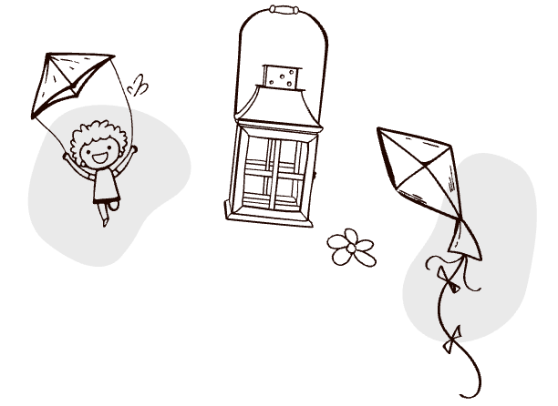

Работа со зрителями
РАБОТА С ДЕТЬМИ
Начинать дружить с театром лучше всего с 4-х летнего возраста. Все предлагаемые формы работы нашего театра с детьми подразумевают то или иное участие родителей.
Театральная гостиная
Уважаемые родители!
Как хорошо, что у нас есть театральная Гостиная! И мы видим, что 3-4-летним ребятишкам с родителями действительно нужно смотреть спектакли сначала там.
О билетах нужно побеспокоиться заранее - всего 20 мест! - и заранее прочитать
советы педагога. Вот они:
- Пожалуйста, приходите не раньше, чем за 15-20 минут до спектакля: дети устают от долгого ожидания и это омрачает их радость от встречи со сказкой.
- Постарайтесь отключиться от ваших забот и проблем и настроиться на доброжелательное общение с работниками театра, которые познакомят вас с «правилами игры» именно в этом спектакле.
- Знакомство начинается в фойе первого этажа, когда все гости уже собрались. Чаще всего взрослых и детей мы разделяем на две компании. Они находятся в нескольких шагах друг от друга, но у каждой компании свои «секреты», своя подготовка именно к этому спектаклю. Все объяснения по поводу того, как сегодня нужно помогать артистам, что будет «можно», а чего «нельзя», происходят по пути в Гостиную (она на третьем этаже).
- Когда зрители переступают порог Гостиной – это уже начало спектакля. На сцене уже кто-то есть, или просто звучит музыка… И взрослые, усаживаясь и усаживая своих детей, должны это учитывать и помнить, о чем с ними договаривались.
- Продолжительность нашего общения со зрителями Гостиной, начиная с момента знакомства и заканчивая выходом из зала, обычно НЕ БОЛЬШЕ ЧАСА. Но за этот час родители, если они были не просто рядом, а ВМЕСТЕ с детьми, могут узнать про своих детей что-то новое, неожиданное и интересное.

«Маленьким детям
и взрослым родителям
Сказка поможет
друг друга понять!»
P.S.
Не путайте, пожалуйста, капризы ребёнка с эмоциональным проживанием событий спектакля. Если ребёнок начинает ныть и проситься домой, конечно, нужно уйти (но не ругать его за это!)
А если он слишком активно участвует в игре и бурно, до слёз, переживает - артисты справятся сами. А вы обсудите всё это дома, перед сном.
Педагоги могут тихонько сделать замечание только взрослому, если он нарушает "правила игры".
Об этих правилах (для каждого спектакля своих) мы и договариваемся с вами на 1 этаже и по пути в Гостиную.
РАБОТА СО ВЗРОСЛЫМИ
1. Будущих мам и пап, а также всех желающих взрослых, Архангельский театр кукол приглашает на «Встречи по понедельникам». В этих встречах принимают участие артисты театра и работники детской библиотеки им. А. Гайдара. Вместе мы читаем книги для детей и про детей. Встречи проходят каждый понедельник в 18.30 (вход служебный) в библиотеке им. А. Гайдара по адресу ул. Карла Либкнехта, 4
2. По предварительным заявкам проводятся:
· экскурсии по театру;
· беседы об истории Архангельского театра кукол, о том, как создается спектакль, о театральных профессиях, о ребенке и его мире, о книгах, театре, сказках и др.;
· консультации, семинары, практические занятия для взрослых, работающих с детьми — руководителей кружков, учителей, воспитателей, библиотекарей, студентов, работников развивающих и развлекательных центров;
· семинары для взрослых зрителей на темы, связанные с возрастными особенностями детей и особенностями восприятия искусства (с приглашением специалистов);
· театрализованные родительские собрания